BelleVie Care are a small start up in the care industry, providing care to communities in Oxfordshire and the North East. BelleVie's care teams are remote and are self-managing and autonomous, there is no centralised management. The care teams are responsible for organising their own shifts and visits in their own Rota's, managing their own customers, and deciding on the best way to provide care for the people they support. Each team has additional support from an experienced Coach and Regional Leader, however the onus is on the teams to self manage
Problem Statement
The teams at BelleVie are currently using a complex suite of Spreadsheets and documents to manage their time and tasks manually. This is causing multiple issues however, and team members find the spreadsheets challenging and frustrating to maintain and read. The spreadsheets are also prone to error and can break if incorrect data is entered into a cell. Visibility of schedules and team performance is also poor, the teams often aren't aware of how well they are performing to agreed metrics, or who is available when for scheduling customer visits.
I was hired to design and build a suite of digital tools to enable teams to truly self-manage easily with very little support. As the teams were using spreadsheets with minimal guidance a great deal of flexibility and variety had grown organically into the teams ways of working.
Research
I completed several user interviews with care workers and coaches from various teams, understanding their day to day experience as a care worker, and any existing pain points and frustrating with existing tools, processes, or ways of working. I also build persona's to better understand the typical Care worker at BelleVie.
I also interviewed the co-founders to understand their vision for the business and self-management, as well as back office staff to understand the overall operation.
I mapped all processes, including the typical day to day tasks of providing care and managing time, ensuring all points of friction were clearly highlighted. This was done in collaboration with all interviewees, and reviewed and iterated upon to ensure it was representative.
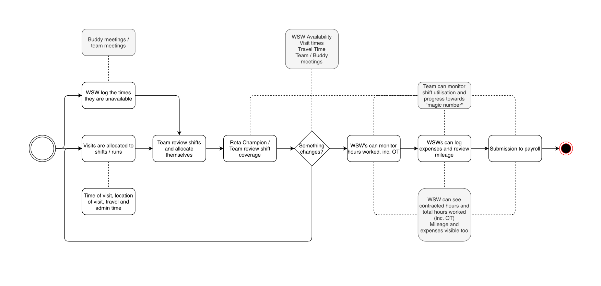
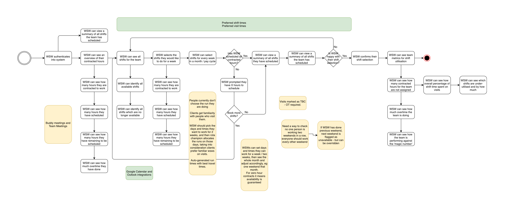
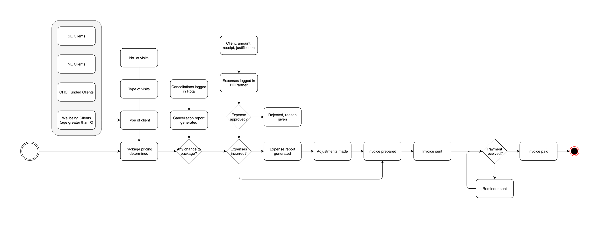
Digital Rota
I built a product roadmap and backlog of initial stories and then designed mobile first screens for a Digital time management system. Care workers would be required to schedule and manage their own visits and shifts. Most care workers at BelleVie are guaranteed a regular salary and regular hours, so all shfits had to be 5 hours in duration. A team of care workers would also be responsible for the overall team performance, which is measured as the proportion of paid customer visits to paid care workers on shift.
UI Screens - Digital Rota
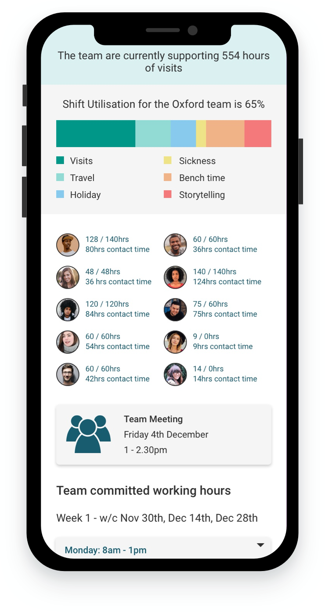
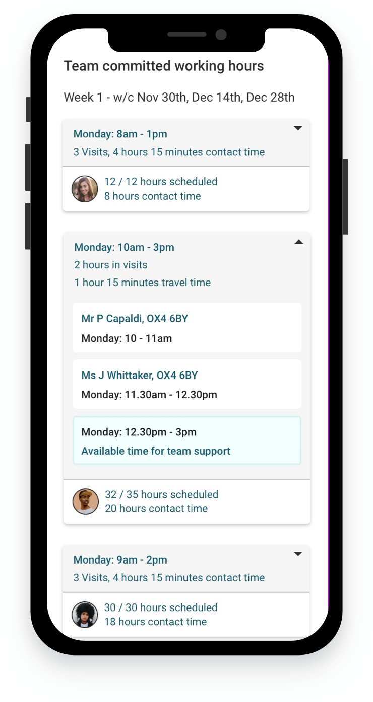
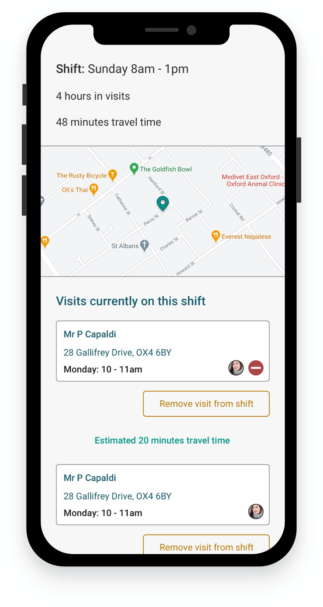
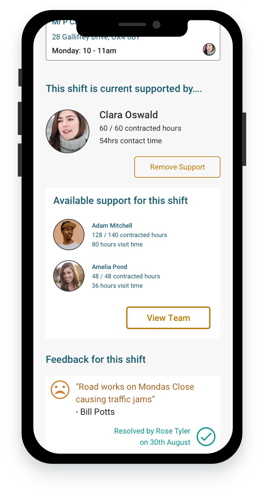
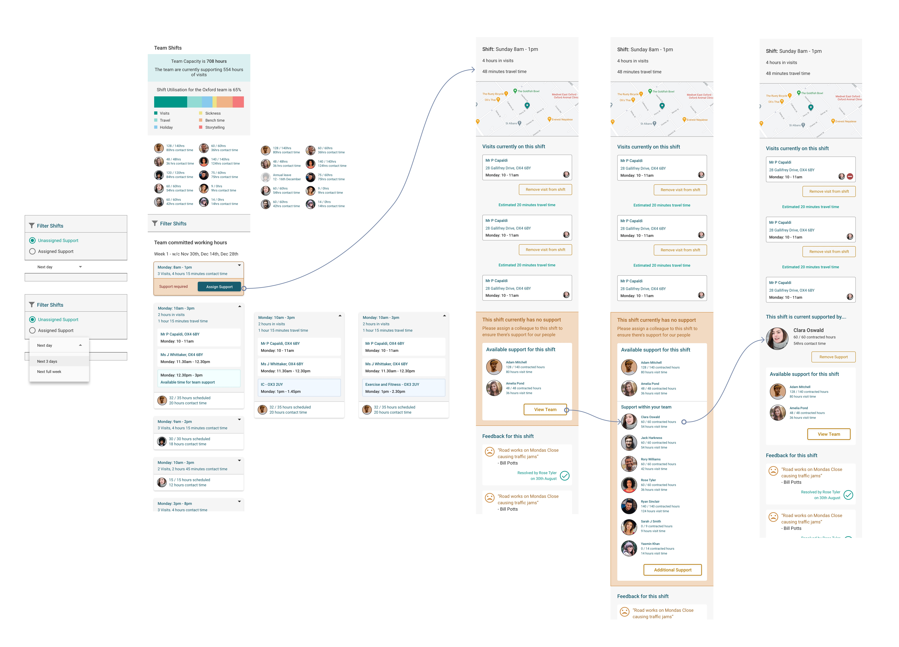
Clickable Prototype for user research - Digital Rota
Feedback was very positive however it was clear that too much was functionality was available on a single page, and users found this confusing to navigate. Elements would also often get covered and hidden by new controls. Functionality was split across several pages, reducing cognitive load. Subsequent testing showed to be much more intuitive.
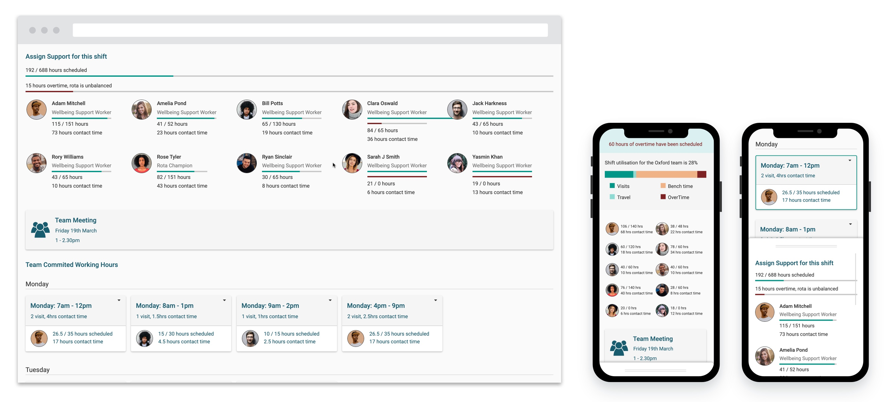
Digital Meetings and Wellbeing tracker
A UI was required to facilitate the teams discussing the overall Wellbeing and Care requirements of the people they support. BelleVie also has to meet regulatory requirements for recording the quality of care that customers receive.
Teams were inconsistently recording this information in Google Documents, and reporting on the data for regulatory requirements was manual and difficult. Since the care teams discussed care in their weekly meetings a simple data entry interface was designed to follow the structure and format of their meetings.
Additional screens were also designed to enable coaches to review the overall status and progress of anyone receiving care
I was asked to build the BelleVie public website using Wordpress in two weeks, to support the launch of BelleVie's services in the North East of England. I was handed incomplete desktop designs in Figma and asked to make them mobile first as they are. After negotiating scope for an MVP I successfully designed and built a responsive mobile website for BelleVie.
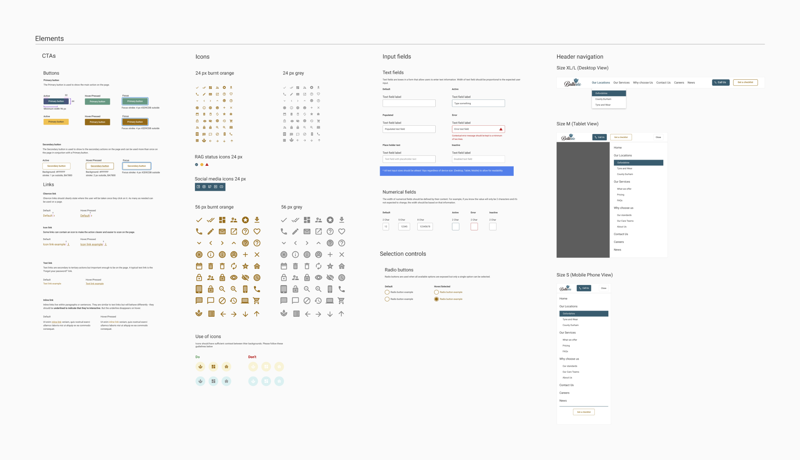
Since the launch of the website I configured Google Analytics and created custom analytics dashboards in Google Data Studio. I also collaborated on several Google Optimize campaigns with the Marketing Lead to continuously iterate on the website and introduce new content and functionality.
Localised landing pages
BelleVie were getting minimal success with the general landing pages for numerous localised Adword and Facebook campaigns. Initial research and feedback showed that potential leaders were unsure of the geographic areas BellEVie were operating in, and the service was described as personal but felt impersonal.
I designed a new localised landing page and tested these in Optimize, targeting key areas BelleVie were targeting for growth. The page empahsis was on a localised service, with a visual coverage map and focus on the Care Workers operating in the area. Casual selfies and phone photos submitted by the Care Workers themselves were used to demonstrate authenticity.
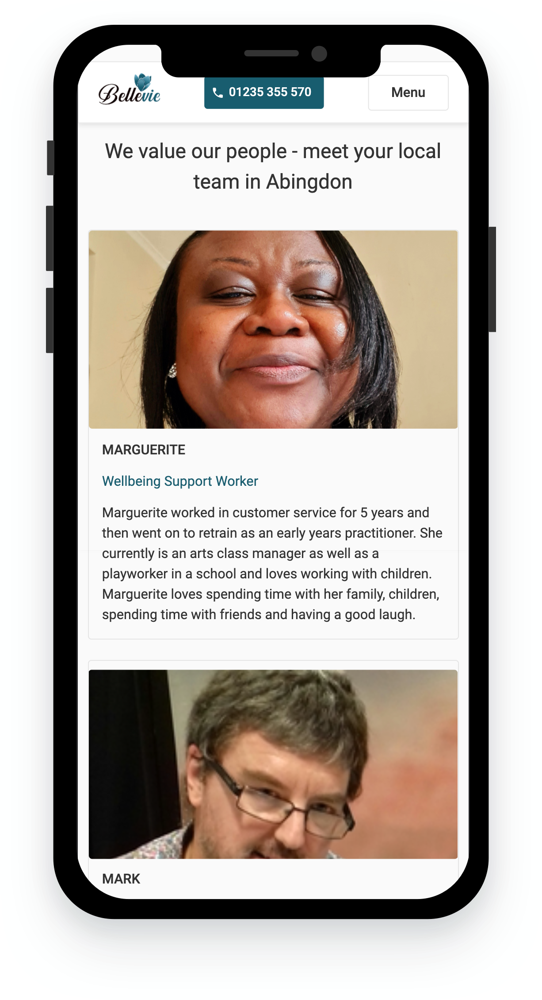
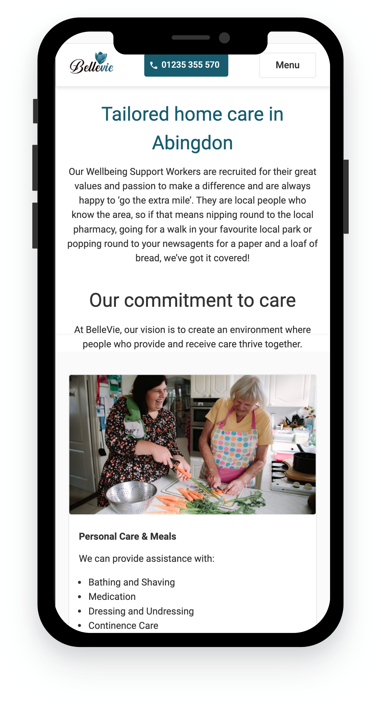
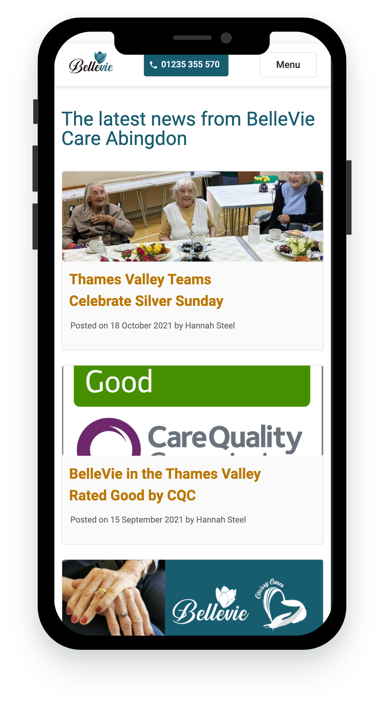
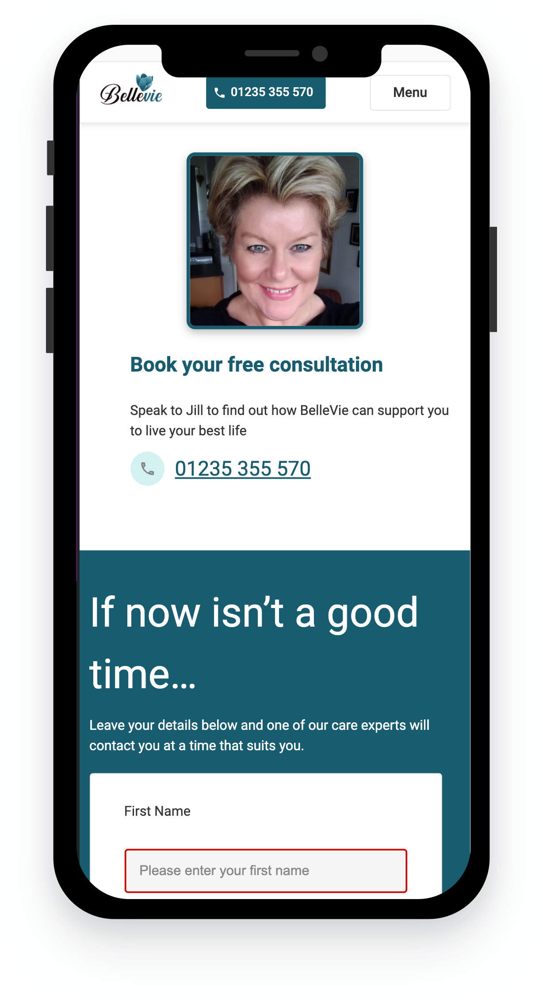
Clear paths to conversion were provided, with several call outs for a phone number (the preferred method of contact), and a contact form at the bottom of the page. A photo of Jill, the companies Business Development Manager, was added next to the phone number again to demonstrate authenticity. Feedback from customers demonstrated that people appreciated they had a single point of contact at BelleVie who was a real person. The new designs demonstrated a 6% increase in overall conversion in testing, and on average have shown a 5% increase in live.
A flat JPEG design image showing various free online resources for self-directed art learning was popular on Reddit. The design was very nice but as a flat JPEG, it was difficult to search and navigate, and any links had to be typed manually. I spent an afternoon turning the large JPEG into a responsive, mobile friendly, web page. This was partly to make the information more accessible and useful for me, as well as to test what I could do with CSS and HTML.
Along with links to free resources structured by topic and ordered by level of experience, each module includes challenges and exercises for a user to practice what they have learned. Each section of the curriculum is signposted visually
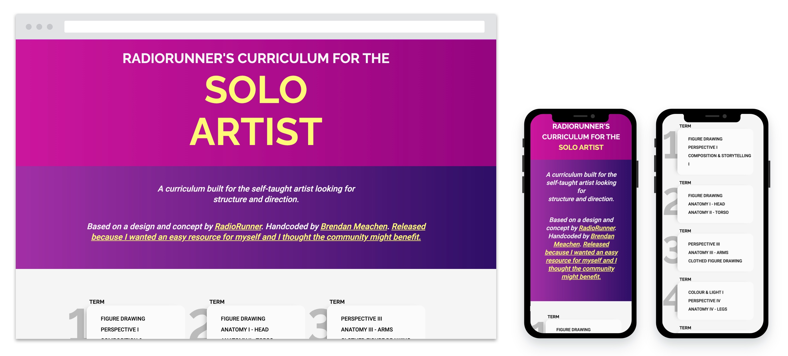
I published the result with no marketing and very little SEO, however I did keep an eye on Google Analytics performance out of curiosity. The page averages circa. 5,000 hits a month from a worldwide audience.
I'm planning to update the page and redesign it, and divide each stage of the curriculum into a more guided flow. I also plan to build guides for other communities, such as the 3D modelling application Blender.